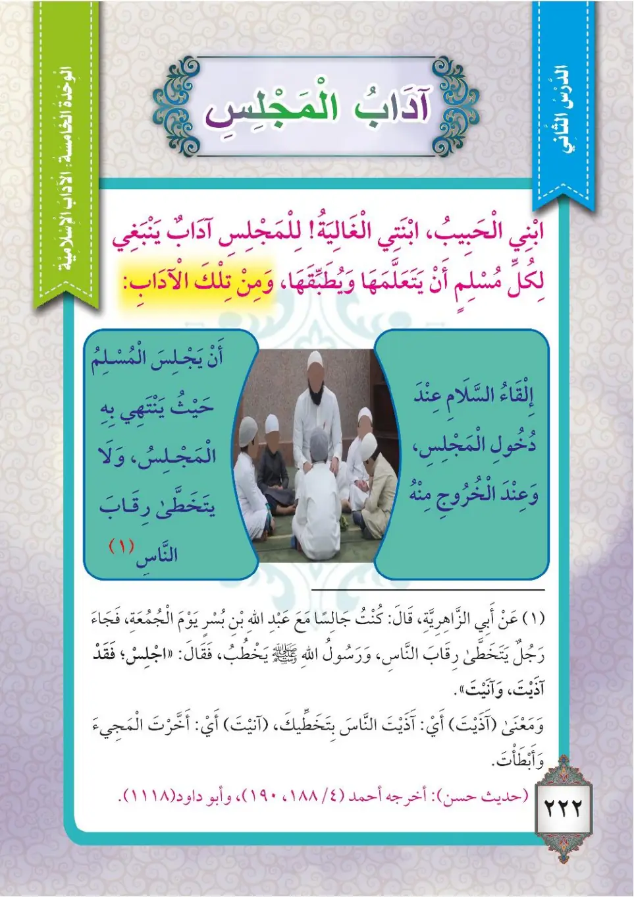
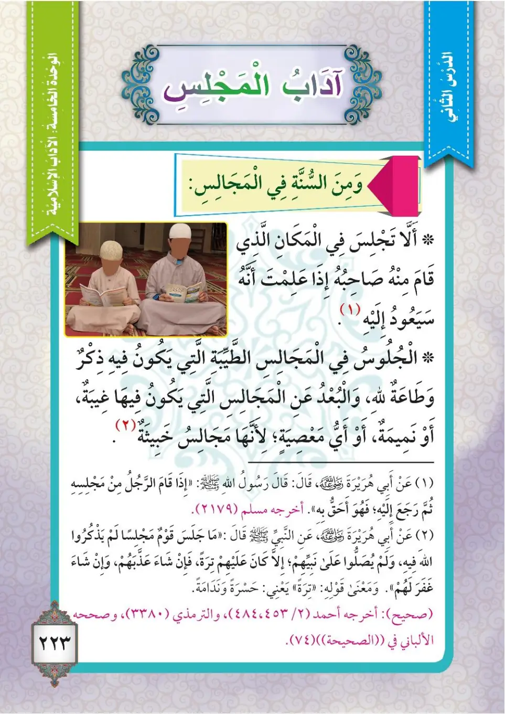
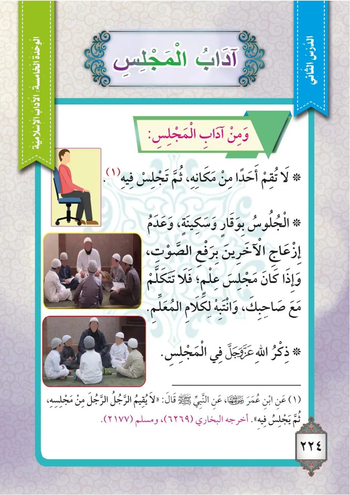
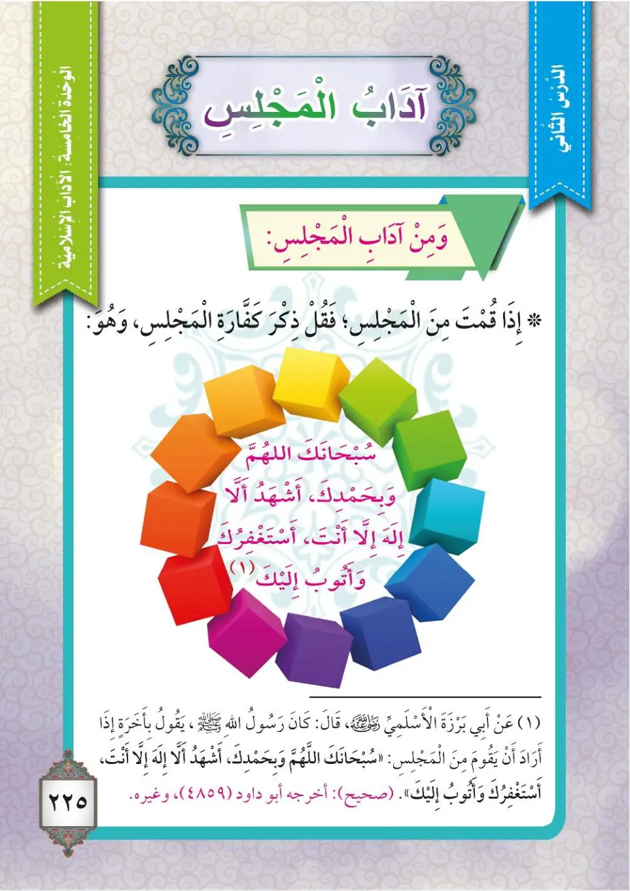

Stage 3·المرحلة الثالثة⭐ Unit 1
آدَابُ المَجْلِسِ Manners of the Gathering (Majlis)
From the Textbookpp. 223–226




يَنْبَغِي لِكُلِّ مُسْلِمٍ أَنْ يَتَعَلَّمَ الْآدَابَ الْغَالِيَةَ لِلْمَجَالِسِ وَيُطَبِّقَهَا، وَمِنْ تِلْكَ الْآدَابِ: ١- إِلْقَاءُ السَّلَامِ عِنْدَ دُخُولِ الْمَجْلِسِ، وَعِنْدَ الْخُرُوجِ مِنْهُ. ٢- أَلَّا يَتَخَطَّى رِقَابَ النَّاسِ فِي الْمَجْلِسِ.
Yanbaghi li-kulli muslimin an yata'allama al-adaba al-ghaliyata li-l-majalisi wa yutabbiqaha, wa min tilka al-adabi: 1- ilqa'u as-salami 'inda dukhuli al-majlisi, wa 'inda al-khuruji minHu. 2- alla yatakhatta raqaba an-nasi fi al-majlisi.
Every Muslim should learn and apply the precious manners of gatherings. Some of those manners are:
1. Giving the greeting of peace (salam) upon entering a gathering, and upon leaving it.
2. Not stepping over people's necks in a gathering.
ஒவ்வொரு முஸ்லிமும் கூட்டங்களின் மாண்புமிக்க நடத்தைகளைக் கற்று கடைப்பிடிக்க வேண்டும். அந்த நடத்தைகளில் சில:
1. கூட்டத்தில் நுழையும்போதும் வெளியேறும்போதும் ஸலாம் (சாந்தி வாழ்த்து) கூறுவது.
2. கூட்டத்தில் மக்களின் தலைகளுக்கு மேல் எட்டிப்பார்க்காமல் இருப்பது.
وَعَنْ أَبِي الزَّاهِرِيَّةِ قَالَ: كَانَ عَبْدُ اللهِ بْنُ بُشْرٍ رَضِيَ اللهُ عَنْهُ جَالِسًا مَعَ أَصْحَابِ رَسُولِ اللهِ ﷺ، فَجَاءَ رَجُلٌ يَتَخَطَّى رِقَابَ النَّاسِ يَوْمَ الْجُمُعَةِ، فَقَالَ لَهُ: «اجْلِسْ؛ فَقَدْ آذَيْتَ». أَخْرَجَهُ الْإِمَامُ أَحْمَدُ (4/188) وَأَبُو دَاوُدَ (1118) وَقَالَ: حَدِيثٌ حَسَنٌ.
Wa 'an Abi az-Zahiriyyati qala: kana 'Abdullahi ibn-Bushrin radiyallahu 'anhu jalisan ma'a ashabi rasulillahi ﷺ, faja'a rajulun yatakhatta riqaba an-nasi yawma al-jumu'ati, faqala laHu: «Ijlis; fa-qad adhayta». Akhrajahu al-imamu Ahmadu (4/188) wa Abu Dawud (1118) wa qala: hadithun hasanun.
Abu az-Zahiriyyah said: Abdullah ibn Bushr, may Allah be pleased with him, was sitting with the companions of the Messenger of Allah ﷺ, and a man came stepping over people's necks on Friday, so he said to him: "Sit down, for you have caused harm." Narrated by Imam Ahmad (4/188) and Abu Dawud (1118), who said: a good (hasan) hadith.
அபூ அஸ்-ஸாஹிரிய்யா கூறினார்: அப்துல்லாஹ் இப்னு புஷ்ர் (ரலி) நபि ﷺ அவர்களின் தோழர்களுடன் அமர்ந்திருந்தார். வெள்ளிக்கிழமையன்று ஒருவர் மக்களின் தலைகளுக்கு மேல் எட்டிப்பார்த்துக் கொண்டே வந்தார். அவரிடம் அப்துல்லாஹ் கூறினார்: "உட்காருங்கள்; நீங்கள் துன்பம் செய்துவிட்டீர்கள்." (அஹ்மத் 4/188, அபூ தாவூத் 1118 - ஹஸன்)
٣- مِنْ سُنَّةِ الْمَجْلِسِ: أَنْ لَا أَجْلِسَ فِي الْمَكَانِ الَّذِي قَامَ مِنْهُ صَاحِبُهُ، إِذَا عَلِمْتُ أَنَّهُ سَيَعُودُ إِلَيْهِ.
3- min sunnati al-majlisi: an la ajlisa fi al-makani alladhi qama minHu sahibuHu, idha 'alimtu annaHu sa-ya'udu ilayHi.
3. From the Sunnah of gatherings: I do not sit in the place from which its owner stood up, if I know that he will return to it.
3. கூட்டத்தின் சுன்னா: எழுந்துசென்றவர் திரும்பி வருவார் என்பதை அறிந்தால், அவர் அமர்ந்திருந்த இடத்தில் நான் அமரமாட்டேன்.
عَنْ أَبِي هُرَيْرَةَ رَضِيَ اللهُ عَنْهُ قَالَ: قَالَ رَسُولُ اللهِ ﷺ: «إِذَا قَامَ الرَّجُلُ مِنْ مَجْلِسِهِ ثُمَّ رَجَعَ إِلَيْهِ فَهُوَ أَحَقُّ بِهِ». أَخْرَجَهُ مُسْلِمٌ.
'An Abi Hurairata radiyallahu 'anHu qala: qala rasulullahi ﷺ: «Idha qama ar-rajulu min majlisiHi thumma raja'a ilayHi fa-Huwa ahaqqu biHi». Akhrajahu Muslimun.
Abu Hurairah, may Allah be pleased with him, said: The Messenger of Allah ﷺ said: "If a man gets up from his place and then returns to it, he has more right to it." Narrated by Muslim.
அபூ ஹுரைரா (ரலி) கூறினார்கள்: "ஒருவர் தம் இருக்கையிலிருந்து எழுந்து சென்று பின் திரும்பினால் அவருக்கே அது மிக உரியது" என்று நபி ﷺ கூறினார்கள். (முஸ்லிம்)
٤- الْجُلُوسُ فِي الْمَجَالِسِ الطَّيِّبَةِ الَّتِي يَكُونُ فِيهَا ذِكْرُ اللهِ وَطَاعَتُهُ، وَالْبُعْدُ عَنِ الْمَجَالِسِ الَّتِي تَكُونُ فِيهَا غِيبَةٌ أَوْ نَمِيمَةٌ أَوْ مَعْصِيَةٌ؛ لِأَنَّهَا مَجَالِسُ خَبِيثَةٌ.
4- al-julusu fi al-majalisi at-tayyibati allati yakunu fiha dhikru Allahi wa ta'atuHu, wal-bu'du 'an al-majalisi allati takunu fiha ghibatun aw namimatun aw ma'siyatun; li'annaHa majalisu khabithatun.
4. Sitting in good gatherings in which Allah is remembered and obeyed, and keeping away from gatherings that contain backbiting, gossip, or disobedience, for those are wicked gatherings.
4. அல்லாஹ்வின் நினைவும் வழிபாடும் நடைபெறும் நல்ல கூட்டங்களில் அமர்வது; புறங்கூச்சல், வதந்தி அல்லது பாவம் நடைபெறும் கூட்டங்களைத் தவிர்ப்பது; ஏனெனில் அவை தீய கூட்டங்கள்.
عَنْ أَبِي هُرَيْرَةَ رَضِيَ اللهُ عَنْهُ قَالَ: قَالَ رَسُولُ اللهِ ﷺ: «مَا جَلَسَ قَوْمٌ مَجْلِسًا لَمْ يَذْكُرُوا اللهَ فِيهِ وَلَمْ يُصَلُّوا عَلَى نَبِيِّهِمْ، إِلَّا كَانَتْ عَلَيْهِمْ تَرَةً؛ إِنْ شَاءَ عَذَّبَهُمْ وَإِنْ شَاءَ غَفَرَ لَهُمْ». أَخْرَجَهُ الْإِمَامُ أَحْمَدُ وَالتِّرْمِذِيُّ وَصَحَّحَهُ الْأَلْبَانِيُّ. وَقَوْلُهُ «تَرَةٌ» مَعْنَاهُ: حَسْرَةٌ وَنَدَامَةٌ.
'An Abi Hurairata radiyallahu 'anHu qala: qala rasulullahi ﷺ: «Ma jalasa qawmun majlisan lam yadhkuru Allaha fihi wa lam yusallu 'ala nabiyyihim, illa kanat 'alayhim tiratun; in sha'a 'adhdhabahum wa in sha'a ghafara lahum». Akhrajahu al-imamu Ahmadu wat-Tirmidhiyyu wa sahhabaHu al-AlbaniyYU. Wa qawluHu «tiratun» ma'naHu: hasratun wa nadamatun.
Abu Hurairah, may Allah be pleased with him, said: The Messenger of Allah ﷺ said: "No people sit in a gathering in which they do not remember Allah and do not send blessings upon their Prophet, except that it will be a source of regret for them; if He wills, He punishes them, and if He wills, He forgives them." Narrated by Imam Ahmad and at-Tirmidhi, and authenticated by al-Albani. His saying "tirah" means: regret and remorse.
அபூ ஹுரைரா (ரலி) கூறினார்கள்: "அல்லாஹ்வை நினைக்காமலும், தம் நபி ﷺ மீது ஸலவாத் அனுப்பாமலும் எந்த மக்கள் ஒரு கூட்டத்தில் அமர்ந்தாலும் அது அவர்களுக்கு கவலையாகவே இருக்கும்; நாடினால் அவர்களைத் தண்டிப்பான்; நாடினால் அவர்களை மன்னிப்பான்" என்று நபி ﷺ கூறினார்கள். (அஹ்மத், திர்மிதி - அல்பானி ஸஹீஹ் என உறுதிப்படுத்தினார்)
٥- مِنْ آدَابِ الْمَجْلِسِ: أَلَّا تُقِيمَ أَحَدًا مِنْ مَكَانِهِ ثُمَّ تَجْلِسَ فِيهِ، وَالْجُلُوسُ بِوَقَارٍ وَسَكِينَةٍ، وَعَدَمُ إِزْعَاجِ الْآخَرِينَ بِرَفْعِ الصَّوْتِ، وَإِذَا كَانَ مَجْلِسُ عِلْمٍ فَلَا تَتَكَلَّمْ مَعَ صَاحِبِكَ وَانْتَبِهْ لِكَلَامِ الْمُعَلِّمِ، وَأَكْثِرْ مِنْ ذِكْرِ اللهِ فِي الْمَجْلِسِ.
5- min adabi al-majlisi: alla tuqima ahadan min makaniHi thumma tajlisa fihi, wal-julusu biwaqarin wa sakinatin, wa 'adamu iz'aji al-akharina biraf'i as-sawti, wa idha kana majlisu 'ilmin fala takallam ma'a sahibika wan-Tabih li-kalami al-mu'allimi, wa akthir min dhikrillahi fi al-majlisi.
5. From the manners of gatherings: do not make someone get up from his place and then sit in it. Sit with dignity and calmness, do not annoy others by raising your voice, and if it is a gathering of knowledge, do not talk to your companion and pay attention to the teacher's words, and remember Allah often in the gathering.
5. கூட்ட நடத்தைகள்: ஒருவரை எழுப்பி அந்த இடத்தில் அமரக்கூடாது; கண்ணியத்துடனும் அமைதியுடனும் அமர வேண்டும்; குரல் உயர்த்தி மற்றவர்களைத் தொந்தரவு செய்யக்கூடாது; கல்விக் கூட்டமாக இருந்தால் தோழனுடன் பேசாமல் ஆசிரியரின் பேச்சில் கவனம் செலுத்த வேண்டும்; கூட்டத்தில் அல்லாஹ்வை அதிகம் நினைவுகூர வேண்டும்.
عَنِ ابْنِ عُمَرَ رَضِيَ اللهُ عَنْهُمَا عَنِ النَّبِيِّ ﷺ قَالَ: «لَا يُقِيمُ الرَّجُلُ الرَّجُلَ مِنْ مَجْلِسِهِ ثُمَّ يَجْلِسُ فِيهِ». أَخْرَجَهُ الْبُخَارِيُّ وَمُسْلِمٌ.
'Ani-bni 'Umar radiyallahu 'anHUma 'ani-nnabiyyi ﷺ qala: «La yuqimu ar-rajulu ar-rajula min majlisiHi thumma yajlisu fihi». Akhrajahu al-Bukhariyyu wa Muslimun.
Ibn Umar, may Allah be pleased with him, narrated that the Prophet ﷺ said: "A man should not make another man get up from his place and then sit in it." Narrated by Al-Bukhari and Muslim.
இப்னு உமர் (ரலி) அவர்கள் கூறினார்கள்: "ஒருவர் மற்றொருவரை அவர் இடத்திலிருந்து எழுப்பிவிட்டு அங்கு அமரக்கூடாது" என்று நபி ﷺ கூறினார்கள். (புகாரி, முஸ்லிம்)
٦- إِذَا قُمْتَ مِنَ الْمَجْلِسِ فَقُلْ كَفَّارَةَ الْمَجْلِسِ، وَهِيَ: «سُبْحَانَكَ اللَّهُمَّ وَبِحَمْدِكَ، أَشْهَدُ أَنْ لَا إِلَهَ إِلَّا أَنْتَ، أَسْتَغْفِرُكَ وَأَتُوبُ إِلَيْكَ».
6- idha qumta mina al-majlisi faqul kaffarata al-majlisi, wa hiya: «Subhanaka Allahumma wa bihamdika, ashhadu an la ilaha illa anta, astaghfiruka wa atubu ilayka».
6. When you get up from a gathering, say the expiation of the gathering, which is: "Subhanaka Allahumma wa bihamdika, ash-hadu an la ilaha illa anta, astaghfiruka wa atubu ilayka."
6. கூட்டத்திலிருந்து எழும்போது கூட்டத்தின் பரிகாரம் (கஃப்பாரா) கூற வேண்டும்: "சுப்ஹானகல்லாஹும்ம வபிஹம்திக், அஷ்ஹது அன் லா இலாஹ இல்லா அந்த், அஸ்தஃபிருக வ அதூபு இலைக்."
عَنْ أَبِي بَرْزَةَ الْأَسْلَمِيِّ رَضِيَ اللهُ عَنْهُ قَالَ: كَانَ رَسُولُ اللهِ ﷺ إِذَا أَرَادَ أَنْ يَقُومَ مِنَ الْمَجْلِسِ قَالَ بِأَخَرَةٍ: «سُبْحَانَكَ اللَّهُمَّ وَبِحَمْدِكَ، أَشْهَدُ أَنْ لَا إِلَهَ إِلَّا أَنْتَ، أَسْتَغْفِرُكَ وَأَتُوبُ إِلَيْكَ». أَخْرَجَهُ أَبُو دَاوُدَ وَغَيْرُهُ.
'An Abi Barzata al-Aslamiyyi radiyallahu 'anHu qala: kana rasulullahi ﷺ idha arada an yaquma mina al-majlisi qala bi-akhiratin: «Subhanaka Allahumma wa bihamdika, ashhadu an la ilaha illa anta, astaghfiruka wa atubu ilayka». Akhrajahu Abu Dawuda wa ghayruHu.
Abu Barzah al-Aslami, may Allah be pleased with him, said: When the Messenger of Allah ﷺ wanted to get up from a gathering, he used to say at the end: "Subhanaka Allahumma wa bihamdika, ash-hadu an la ilaha illa anta, astaghfiruka wa atubu ilayka." Narrated by Abu Dawud and others.
அபூ பர்ஸா அல்-அஸ்லமீ (ரலி) கூறினார்கள்: "நபி ﷺ ஒரு கூட்டத்திலிருந்து எழ முற்படும்போது கடைசியில் கூறுவார்கள்: சுப்ஹானகல்லாஹும்ம வபிஹம்திக், அஷ்ஹது அன் லா இலாஹ இல்லா அந்த், அஸ்தஃபிருக வ அதூபு இலைக்" என்று கூறினார்கள். (அபூ தாவூத்)